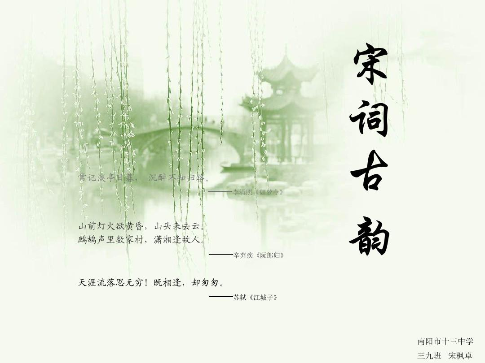

宋代盛行的一种中国文学体裁，宋词是一种相对于古体诗的新体诗歌，为宋代儒客文人智慧精华，标志宋代文学的最高成就。宋词句子有长有短，便于歌唱。因是合乐的歌词，故又称曲子词、乐府、乐章、长短句、诗余、琴趣等。
它始于南朝梁代，形成于唐代而极盛于宋代。宋词是中国古代文学皇冠上光辉夺目的明珠，在古代中国文学的阆苑里，它是一座芬芳绚丽的园圃。它以姹紫嫣红、千姿百态的神韵，与唐诗争奇，与元曲斗艳，历来与唐诗并称双绝，都代表一代文学之盛。后有同名书籍《宋词》。
宋词的代表人物主要有苏轼、辛弃疾（豪放派代表词人）、柳永、李清照（婉约派代表词人）。
……

© 版权所有 沈家峰 2259665039@qq.com